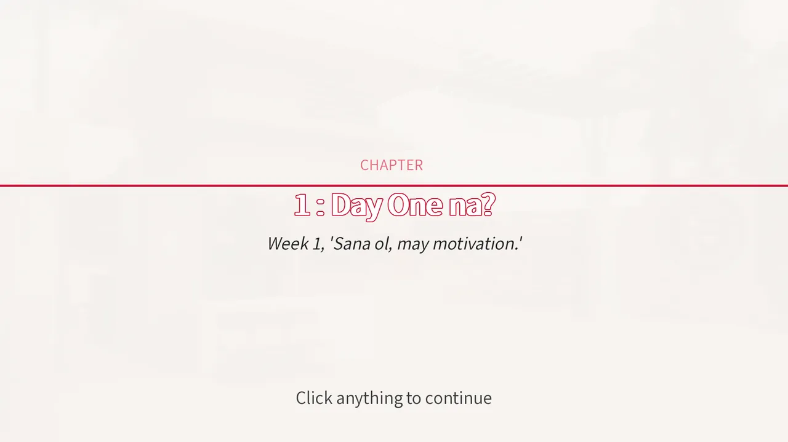
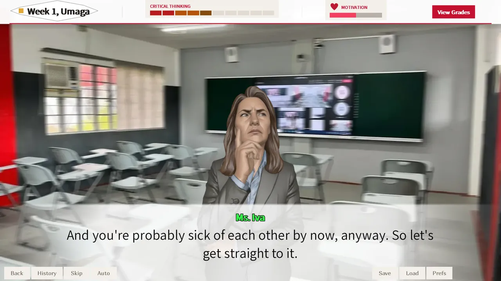
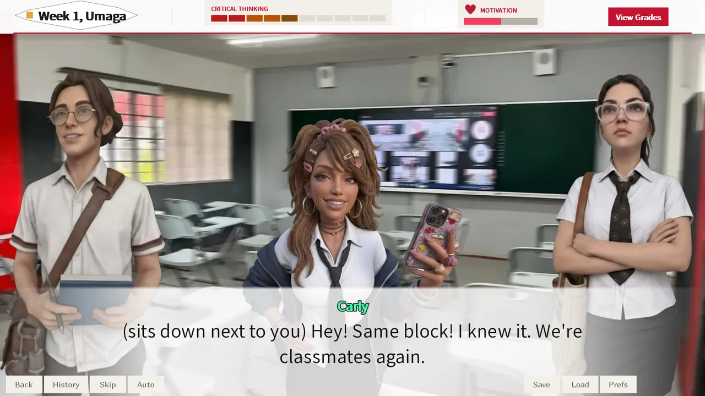
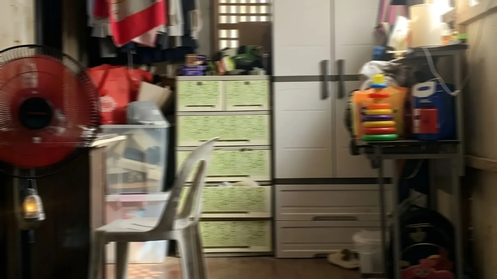
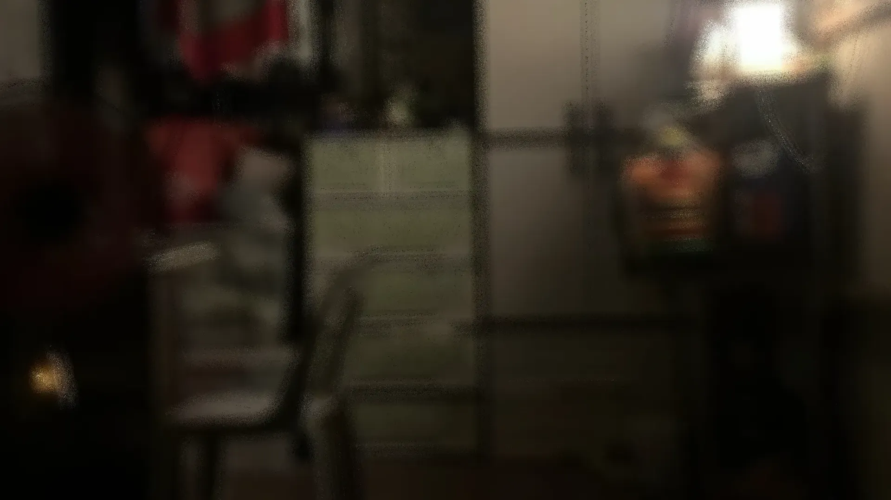

The CastThesis, Section 1.3 (Narrative and Content Scope, Character Scope)
One semester, three subjects, ten characters
The story runs through a prologue and eight weekly chapters set in Mabalacat City College, written in Taglish with an English mode. You play Alex or Alexa. Your best friend, Carl or Carly, is chosen in the prologue, and that friend can be a steady companion or a source of peer pressure depending on your choices. Kent, Gabby, and Rey are classmates who act as a moral compass or a peer influence. Each of the ten characters has three expression states.
| Professor | Subject | Questions draw on |
|---|---|---|
| Mr. Earns | Networking | VLANs and subnetting |
| Mr. Kai | Programming | Python debugging |
| Ms. Iva | Cybersecurity | Data privacy, cybercrime, and citations |



Where it happens
Backgrounds are photographs. Character sprites were modeled in SculptGL from the team's sketches.

